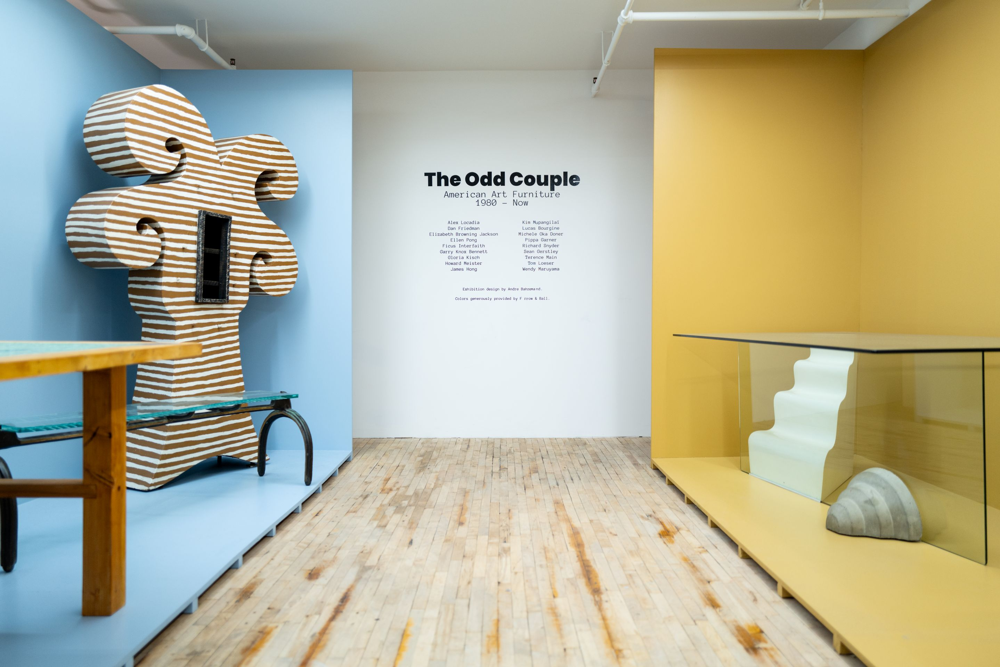
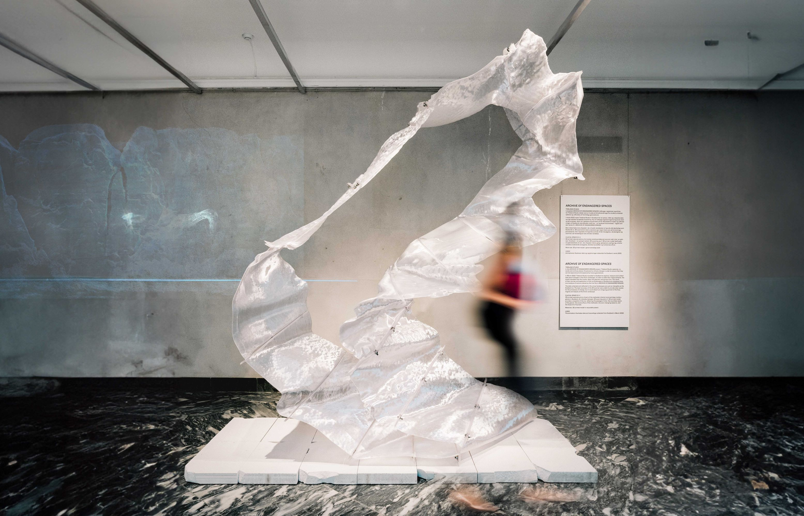
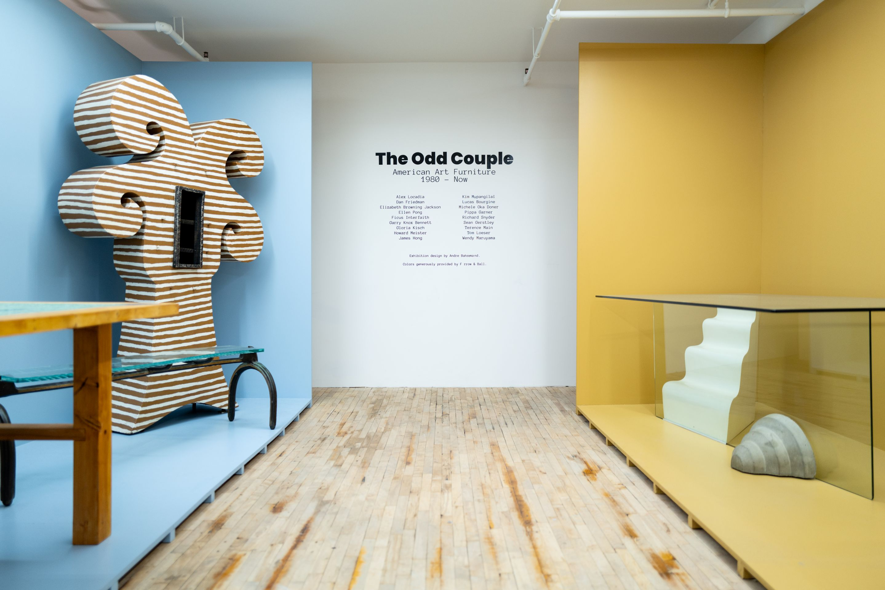
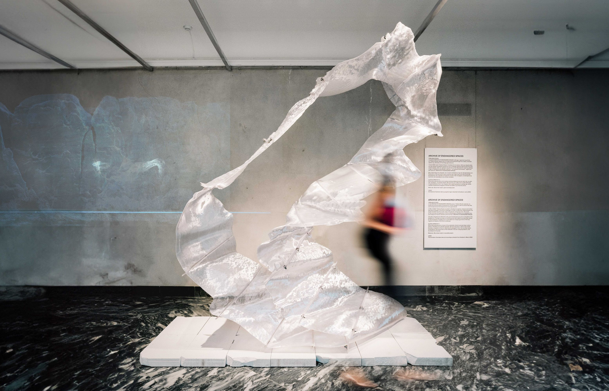
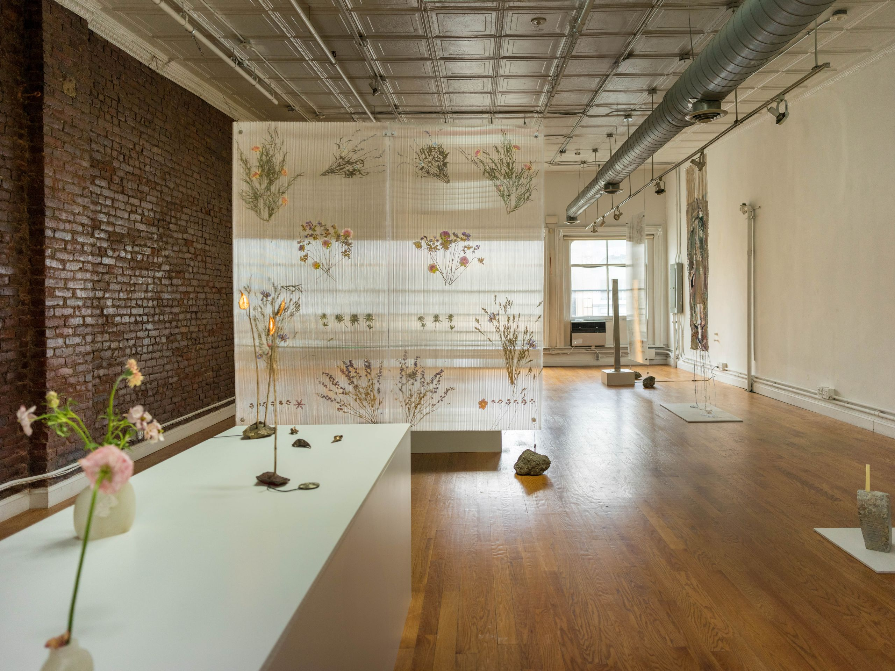
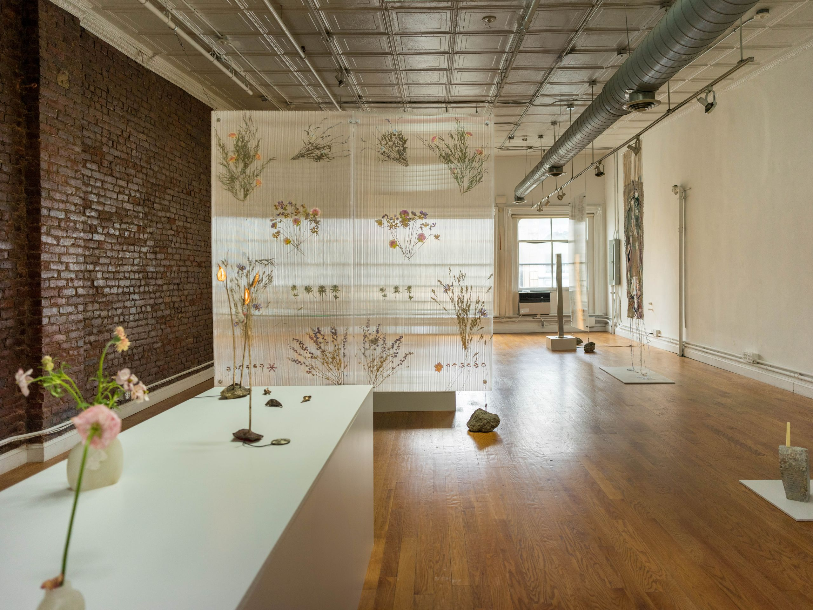

Office
&&
email: office@andand.space
phone: +45 20640262
About
&& is an experience-based spatial design practice working between Copenhagen and New York. We operate across architecture, interiors, installations, and curation. The studio is founded on creating memorable, context-led experiences. We translate identity into spatial strategy, material systems, and clear user journeys, working closely with clients to turn complex ideas into buildable environments. From early concept through documentation and delivery, we protect the core concept while aligning performance, budget, and identity. With an exploratory approach, we shape spaces that resonate and endure.

 





 
